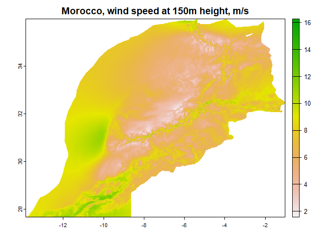
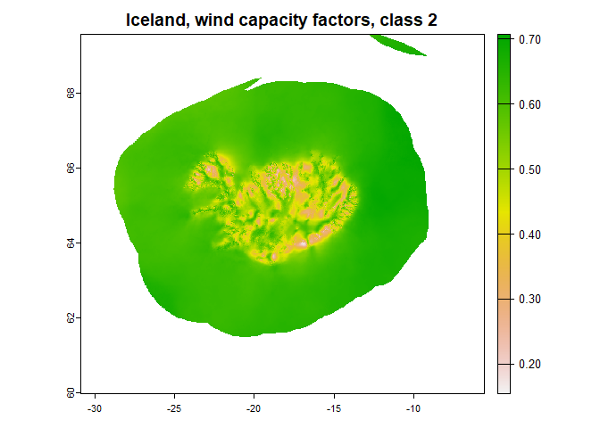

The package assists downloading and processing high-resolution (250m grid) maps with averaged wind potential from Global Wind Atlas. The data might be useful in energy systems modeling for selections of locations with high wind energy potential.
Documentation: https://energyrt.github.io/globalwindatlas/index.html
Installation
You can install the development version of globalwindatlas from GitHub with:
# install.packages("devtools")
devtools::install_github("energyRt/globalwindatlas")Example
This is a basic example which shows you how to solve a common problem:
library(globalwindatlas)
## set directory for downloaded files, also will be used for quick files access
gwa_set_dir("data/gwa")
## download wind capacity factors for wind-class #1
gwa_get_wind_cf("ISL", IEC = 1)
#> [1] "data/gwa/ISL_capacity_factor_IEC1.tif"
## download wind speed data
ISL <- gwa_get_wind_cf("ISL", IEC = 2) # Iceland
ISL
#> [1] "data/gwa/ISL_capacity_factor_IEC2.tif"
MAR <- gwa_get_wind_speed("MAR", height = 150) # Morocco
## plot data
library(terra)
#> terra 1.7.29
plot(rast(MAR), main = "Morocco, wind speed at 150m height, m/s")

References
https://globalwindatlas.info/download/gis-files (files to download)
https://energyrt.github.io/globalwindatlas/index.html (documentation)